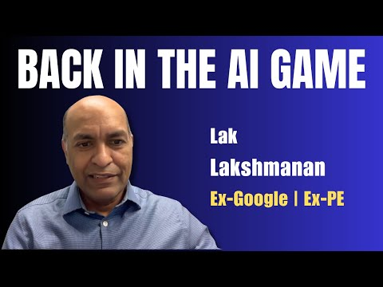
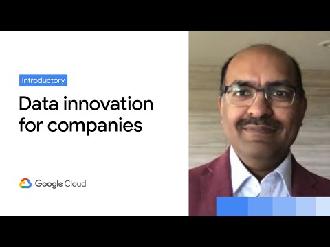
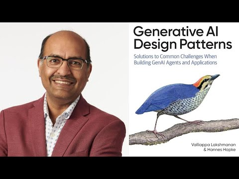
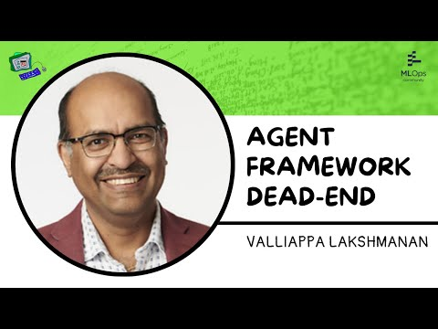
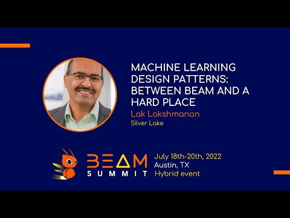
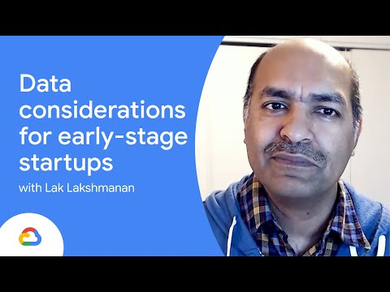
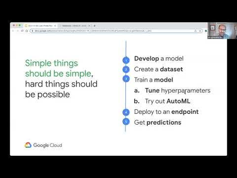
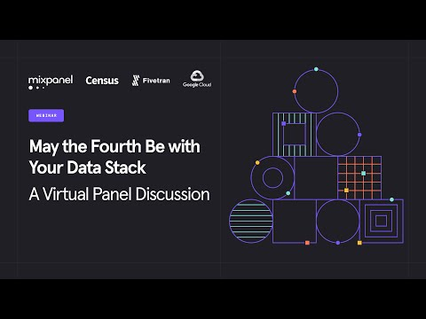

AI FDE Jobs Are Growing: What Skills Do You Need?
The Cloud Girl · Priyanka Vergadia
Watch on YouTubeTalks & conversations
Conversations on where AI is heading, and practical talks on building systems that work.
Selected talks in each topic. Expand “More videos” for the full list, newest first.
The Cloud Girl · Priyanka Vergadia
Watch on YouTube
Joe Reis podcast
Watch on YouTube
Google Cloud Next
Watch on YouTubeAll recordings in this topic, newest first.

All About Data podcast
Watch on YouTube
Agents in Production
Watch on YouTube
All recordings in this topic, newest first.

Google Cloud
Watch on YouTube
GDE Fest
Watch on YouTube
Panel with Mixpanel, Fivetran, and Census
Watch on YouTubeAll recordings in this topic, newest first.
Jack of All Journeys · Adi Naidu
Watch on YouTubeData Canteen · Ted Hallum
Watch on YouTube
Coffee with a Googler
Watch on YouTubeAll recordings in this topic, newest first.